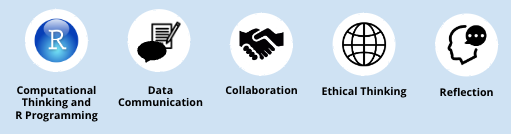
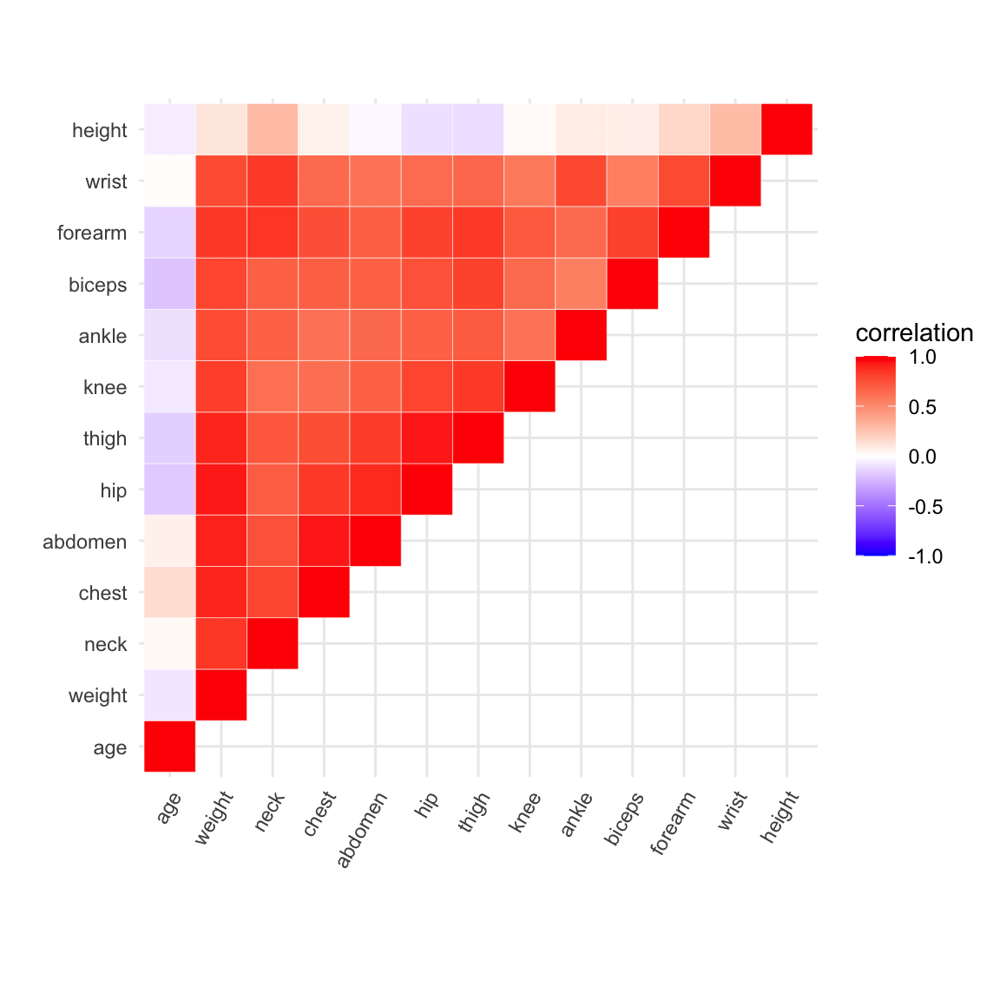
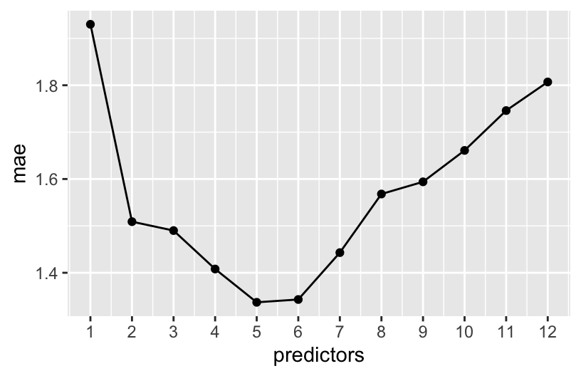

Come up with a team name that reflects the majors represented in your group WITHOUT including the names of those majors (e.g., “data rocks!” instead of “statistics geology”)
See the #announcements on Slack about upcoming events.
Prepare to take notes:
Locate, download, save, and open the Part 1 QMD for today’s class.
You’ll need the reshape2 package today: install this if you haven’t already.
WAIT to open Part 2 until later in class!
Learning Goals
Statistical Machine Learning Concepts
Gain intuition about different approaches to variable selection
Clearly describe the forward and backward stepwise selection algorithm and why they are examples of greedy algorithms
Compare best subset and stepwise algorithms in terms of optimality of output and computational time
Describe how selection algorithms can give a measure of variable importance
General Skills

Highlight: Collaborative Learning
Understand and demonstrate characteristics of effective collaboration (team roles, interpersonal communication, self-reflection, awareness of social dynamics, advocating for yourself and others).
Develop a common purpose and agreement on goals.
Be able to contribute questions or concerns in a respectful way.
Share and contribute to the group’s learning in an equitable manner.
Reflection
Collaborative Learning
Take 5 minutes to reflect upon your work throughout Unit 1, particularly with respect to collaboration.
Reflect upon your strengths and what you might change in the next unit:
How actively did you contribute to group discussions?
How actively did you include ALL other group members in discussion?
In what ways did you (or did you not) help create a space where others feel comfortable making mistakes & sharing their ideas?
Unit 1 Reflection (continued)
If you did not finish Exercises #9 and #10 from last class, please take time after class today to do so.
Notes: Model Selection
Context
world = supervised learning
We want to model some output variable \(y\) using a set of potential predictors (\(x_1, x_2, ..., x_p\)).
task = regression \(y\) is quantitative
model = linear regression
We’ll assume that the relationship between \(y\) and (\(x_1, x_2, ..., x_p\)) can be represented by
In model building, the decision of which predictors to use depends upon our goal.
Inferential models
Goal: Explore & test hypotheses about a specific relationship.
Predictors: Defined by the goal.
Example: An economist wants to understand how salaries (\(y\)) vary by age (\(x_1\)) while controlling for education level (\(x_2\)).
Predictive models
Goal: Produce the “best” possible predictions of \(y\).
Predictors: Any combination of predictors that help us meet this goal.
Example: A mapping app wants to provide users with quality estimates of arrival time (\(y\)) utilizing any useful predictors (eg: time of day, distance, route, speed limit, weather, day of week, traffic radar…)
Model Selection Goals
Model selection algorithms can help us build a predictive model of \(y\) using a set of potential predictors (\(x_1, x_2, ..., x_p\)).
There are 3 general approaches to this task:
Variable selection (today)
Identify a subset of predictors to use in our model of \(y\).
Shrinkage / regularization (next class) Shrink / regularize the coefficients of all predictors toward or to 0.
Dimension reduction (later in the semester) Combine the predictors into a smaller set of new predictors.
Exercises: Part 1
Instructions
Open the Part 1 QMD. Scroll down to the # Exercises section.
As a group, you’ll design a variable selection algorithm to pick which predictors to use in a predictive model of height. Specifically, you will:
15 mins: come up with one algorithm, document it, and try it
5 mins: try another group’s algorithm
NOTE: This will NOT be perfect! Our goals are to:
Have fun and work together!
Tap into your intuition for key questions and challenges in variable selection.
Deepen your understanding of “algorithms” and “tuning parameters” by designing and communicating your own.
Questions
Let’s build a predictive model of height in inches using one or more of 12 possible predictors. Other than age and weight, these are circumferences measured in cm.
A heat map displays correlations for each pair of variables in our dataset. Not only is height correlated with multiple predictors, the predictors are correlated with one another (mulicollinear)! We don’t need all of them in our model.
# Get the correlation matrixlibrary(reshape2)cor_matrix <-cor(humans)cor_matrix[lower.tri(cor_matrix)] <-NAcor_matrix <- cor_matrix %>%melt() %>%na.omit() %>%rename(correlation = value)# Visualize the correlation for each pair of variablesggplot(cor_matrix, aes(x = Var1, y = Var2, fill = correlation)) +geom_tile(color ="white") +scale_fill_gradient2(low ="blue", high ="red", mid ="white", midpoint =0, limit =c(-1,1)) +labs(x ="", y ="") +theme_minimal() +theme(axis.text.x =element_text(angle =60, hjust =1)) +coord_fixed()

Design your own algorithm (15 minutes)
Do not use any materials from outside this class.
Document your algorithm in words (not code) in this google doc.
Your algorithm must:
be clear to other humans
be clear to a machine (cannot utilize context)
lead to a single model that uses 0-12 of our predictors
define and provide directions for selecting any tuning parameters
Implement as many steps of your algorithm as possible in the time allotted. You can modify the code below to build and evaluate the models in your algorithm:
# STEP 1: model specificationlm_spec <-linear_reg() %>%set_mode("regression") %>%set_engine("lm")# STEP 2: model estimationheight_model_1 <- lm_spec %>%fit(height ~ age + weight + neck + chest + abdomen + hip + thigh + knee + ankle + biceps + forearm + wrist, data = humans)# Check it outheight_model_1 %>%tidy()# CV MAEset.seed(253)lm_spec %>%fit_resamples( height ~ age + weight + neck + chest + abdomen + hip + thigh + knee + ankle + biceps + forearm + wrist,resamples =vfold_cv(humans, v =10), metrics =metric_set(mae) ) %>%collect_metrics()
Test another group’s algorithm (5 minutes)
Try to implement the next algorithm below yours (or the first algorithm if your group’s is last). Think: Are the steps clear? What are the drawbacks to the algorithm?
Notes: Variable Selection
Open the Part 2 QMD to take notes.
Goal
Let’s consider three existing variable selection algorithms.
Heads up: these algorithms are important to building intuition for the questions and challenges in model selection, BUT have major drawbacks.
Example 1: Best Subset Selection Algorithm
Build all\(2^p\) possible models that use any combination of the available predictors \((x_1, x_2,..., x_p)\).
Identify the best model with respect to some chosen metric (eg: CV MAE) and context.
Suppose we used this algorithm for our height model with 12 possible predictors. What’s the main drawback?
Solution
It’s computationally expensive. For our humans example, we’d need to build 4096 models:
2^12
[1] 4096
Example 2: Backward Stepwise Selection Algorithm
Build a model with all\(p\) possible predictors, \((x_1, x_2,..., x_p)\).
Repeat the following until only 1 predictor remains in the model:
Remove the 1 predictor with the biggest p-value.
Build a model with the remaining predictors.
You now have \(p\) competing models: one with all \(p\) predictors, one with \(p-1\) predictors, …, and one with 1 predictor. Identify the “best” model with respect to some metric (eg: CV MAE) and context.
Let’s try out the first few steps!
# Load packages and datalibrary(tidyverse)library(tidymodels)humans <-read.csv("https://kegrinde.github.io/stat253_coursenotes/data/bodyfat1.csv")
# STEP 1: model specificationslm_spec <-linear_reg() %>%set_mode("regression") %>%set_engine("lm")
# STEP 2: model estimate (using all 12 predictors to start)# Pick apart this code and make it easier to identify the least "significant" predictor!!!lm_spec %>%fit(height ~ age + weight + neck + chest + abdomen + hip + thigh + knee + ankle + biceps + forearm + wrist, data = humans) %>%tidy() %>%filter(term !="(Intercept)") %>%mutate(p.value =round(p.value, 4))
# All 12 predictorslm_spec %>%fit(height ~ age + weight + neck + chest + abdomen + hip + thigh + knee + ankle + biceps + forearm + wrist,data = humans) %>%tidy() %>%# use tidy to get p-values for each coefficientfilter(term !="(Intercept)") %>%# exclude the interceptmutate(p.value =round(p.value, 4)) %>%# round the p-values for easier viewingarrange(desc(p.value)) # added this line to arrange from largest to smallest p-value
(Review) Interpret the CV MAE for the model of height by weight alone.
Is this algorithm more or less computationally expensive than the best subset algorithm?
The predictors neck and wrist, in that order, are the most strongly correlated with height. Where do these appear in the backward sequence and what does this mean?
We deleted predictors one at a time. Why is this better than deleting a collection of multiple predictors at the same time (eg: kicking out all predictors with p-value > 0.1)?
Solution
Using a linear model with only weight to predict height, our prediction error would be on average 3.58 inches off from the truth on new data.
Less. We only have to build 12 models.
Both neck and wrist are kicked out early! The 1-predictor model produced by this algorithm isn’t necessarily the best 1-predictor model (same for any number of predictors).
The value of the coefficient (and thus the p-value) is dependent on the other variables in the model as we are accounting for or conditioning on them.
Example 4: Backward Stepwise Selection Final Model
We have to pick just 1 of the 12 models as our final model.
That is, we have to pick a value for our tuning parameter, the number of predictors.
It helps to plot the CV MAE for each model in the sequence.
Here’s another example from a different subset of these data:

In the odd “Goldilocks” fairy tale, a kid comes upon a bear den – the first bear’s bed is too hard, the second bear’s is too soft, and the third bear’s is just right. Our plot illustrates a goldilocks problem in tuning the number of predictors in our backward stepwise model. Explain.
When the number of predictors is too small, the MAE increases because the model is too….
When the number of predictors is too large, the MAE increases because the model is too….
Which model do you pick?!?
Solution
Too few predictors: model is too simple. too many predictors: model is too overfit.
Based on our data, I think the model with 1 predictor seems pretty reasonable! If I were looking at the other MAE plot, though, I might gravitate pick a model with 1 (the simplest), 2 (still simple, but better MAE than 1 predictor), or 5 predictors (the model with the best CV MAE).
Example 5: machine learning vs human learning
When tuning or finalizing a model building algorithm, we (humans!) have our own choices to make. For one, we need to decide what we prefer:
a model with the lowest prediction errors; or
a more parsimonious model: one with slightly higher prediction errors but fewer predictors
In deciding, here are some human considerations:
goal: How will the model be used? Should it be easy for humans to interpret and apply?
cost: How many resources (time, money, computer memory, etc) do the model and data needed require?
impact: What are the consequences of a bad prediction?
For each scenario below, which model would you pick: (1) the model with the lowest prediction errors; or (2) a parsimonious model with slightly worse predictions?
Google asks us to re-build their search algorithm.
A small non-profit hires us to help them build a predictive model of the donation dollars they’ll receive throughout the year.
Solution
1
2
Example 6: Forward Stepwise Selection Algorithm
How do you think this works?
Is it more or less computationally expensive than backward stepwise?
Solution
Start with 0 predictors. Add the predictor with the smallest p-value. To this model, add a second predictor with the smallest p-value. Continue until all predictors are in the model.
more. For 12 predictors, we’d have to build 12 models in step 1, 11 models in step 2, etc. Thus 12 + 11 + … + 1 = 78 models total.
WARNING
Variable selection algorithms are a nice, intuitive place to start our discussion of model selection techniques.
BUT we will not use them.
They are frowned upon in the broader ML community, so much so that tidymodels doesn’t even implement them! Why?
Best subset selection is computationally expensive.
Backward stepwise selection:
is greedy – it makes locally optimal decisions, thus often misses the globally optimal model
overestimates the significance of remaining predictors, thus shouldn’t be used for inference
Forward stepwise selection:
is computationally expensive
can produce odd combinations of predictors (eg: a new predictor may render previously included predictors non-significant).
Exercises: Part 2
Instructions
Scroll down to the # Exercises section in the Part 2 QMD.
Goal: become familiar with new code structures (recipes and workflows)
Ask me questions as I move around the room.
Questions
The video for today introduced the concepts of recipes and workflows in the tidymodels framework. These concepts will become important to our new modeling algorithms. Though they aren’t necessary to linear regression models, let’s explore them in this familiar setting.
Run through the following discussion and code one step at a time. Take note of the general process, concepts, and questions you have.
STEP 1: model specification
This specifies the structure or general modeling algorithm we plan to use.
It does not specify anything about the variables of interest or our data.
lm_spec <-linear_reg() %>%set_mode("regression") %>%set_engine("lm")# Check it outlm_spec
Linear Regression Model Specification (regression)
Computational engine: lm
STEP 2: recipe specification
Just as a cooking recipe specifies the ingredients and how to prepare them, a tidymodels recipe specifies:
the variables in our relationship of interest (the ingredients)
how to pre-process or wrangle these variables (how to prepare the ingredients)
the data we’ll use to explore these variables (where to find the ingredients)
It does not specify anything about the model structure we’ll use to explore this relationship.
# A simple recipe with NO pre-processingdata_recipe <-recipe(height ~ wrist + ankle, data = humans)# Check it outdata_recipe
STEP 3: workflow creation (model + recipe)
This specifies the general workflow of our modeling process, including our model structure and our variable recipe.
model_workflow <-workflow() %>%add_recipe(data_recipe) %>%add_model(lm_spec)# Check it outmodel_workflow
══ Workflow ════════════════════════════════════════════════════════════════════
Preprocessor: Recipe
Model: linear_reg()
── Preprocessor ────────────────────────────────────────────────────────────────
0 Recipe Steps
── Model ───────────────────────────────────────────────────────────────────────
Linear Regression Model Specification (regression)
Computational engine: lm
STEP 4: Model estimation
This step estimates or fits our model of interest using our entire sample data.
The model (lm_spec) and variable details (here just height ~ wrist + ankle) are specified in the workflow, so we do not need to give that information again!
my_model <- model_workflow %>%fit(data = humans)
STEPS 5: Model evaluation
To get in-sample metrics, use my_model like normal.
# example: calculate of in-sample metricsmy_model %>%glance()